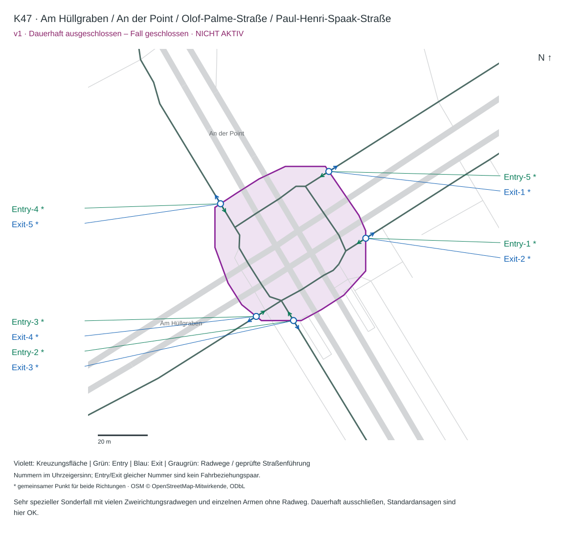
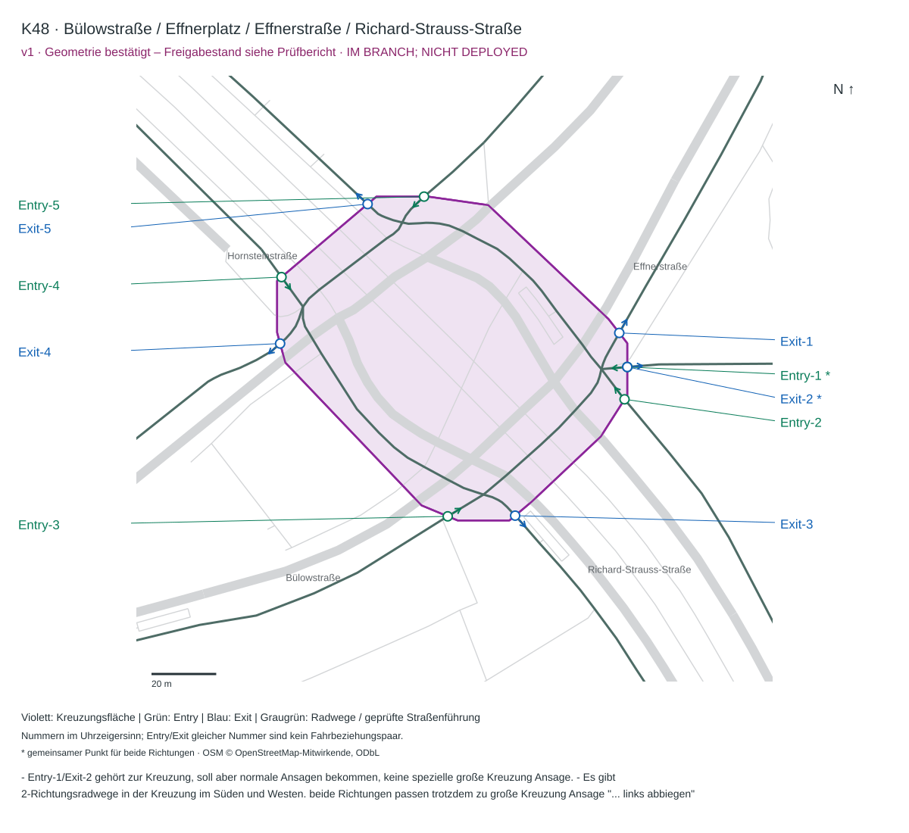
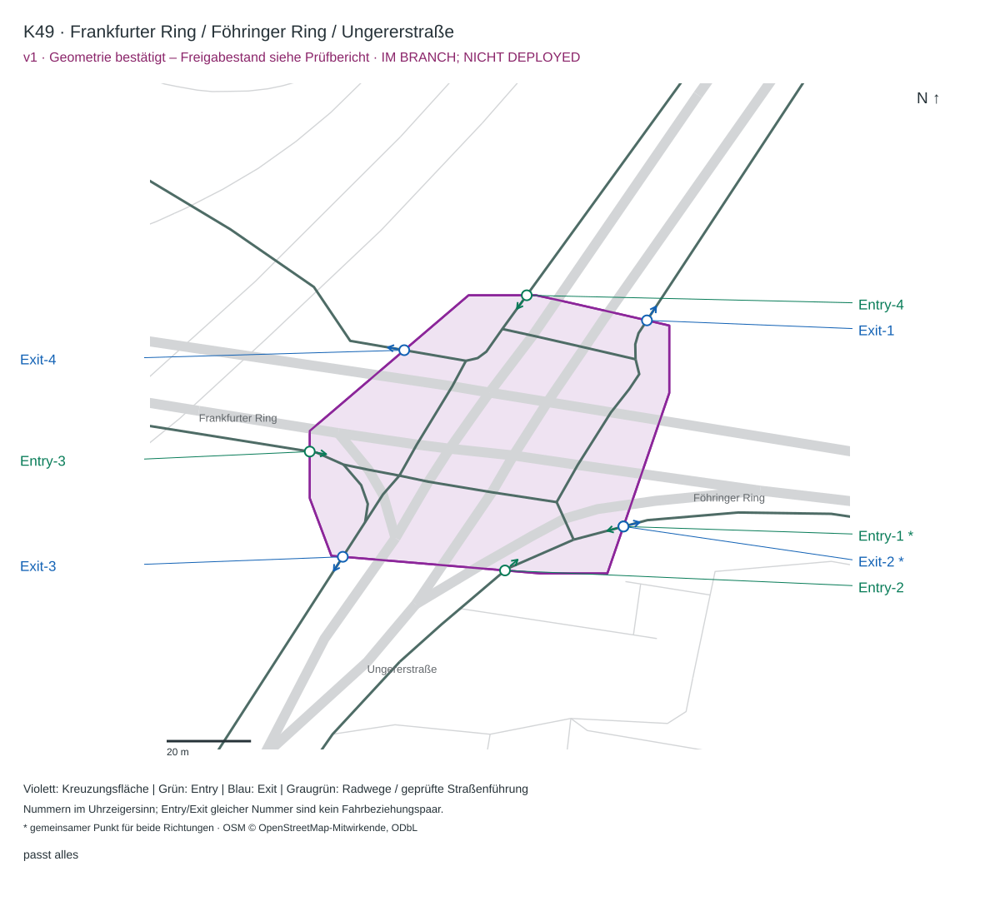
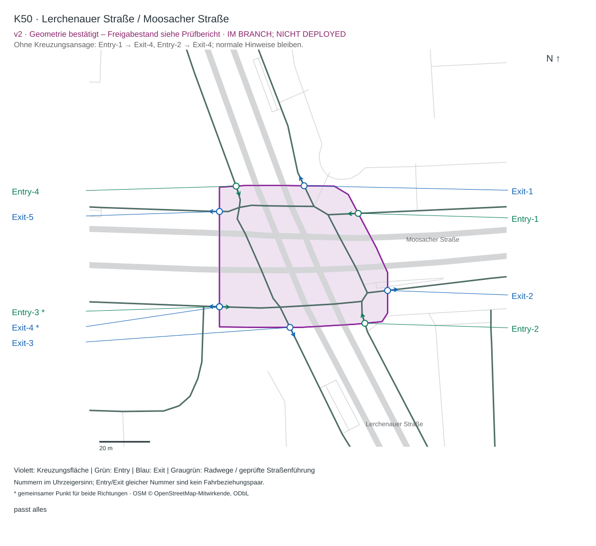

K47 v1 · Am Hüllgraben / An der Point / Olof-Palme-Straße / Paul-Henri-Spaak-Straße
Sehr spezieller Sonderfall mit vielen Zweirichtungsradwegen und einzelnen Armen ohne Radweg. Dauerhaft ausschließen, Standardansagen sind hier OK.

3 Geometrien freigegeben, 1 noch zur Sichtprüfung offen. Technischer Stand und Live-Status siehe Gesamtübersicht. Die vier noch offenen Kandidaten mit jeweils neun ausgehenden Kfz-Fahrspuren laut Inventar. Bitte Umfang der Fläche, Entry-/Exit-Punkte, Fahrtrichtung und fehlende Anschlüsse prüfen. Benachbarte Einmündungen bleiben außerhalb. Radfahrstreifen werden anhand ihrer OSM-Fahrbahnmitte dargestellt; die seitliche Lage ist nicht vermessen. Eine Geometriefreigabe ist noch keine Aktivierung; Fahrbeziehungsprüfung und Live-Status werden getrennt dokumentiert.
Gesamtübersicht · Kontaktübersicht
Sehr spezieller Sonderfall mit vielen Zweirichtungsradwegen und einzelnen Armen ohne Radweg. Dauerhaft ausschließen, Standardansagen sind hier OK.

- Entry-1/Exit-2 gehört zur Kreuzung, soll aber normale Ansagen bekommen, keine spezielle große Kreuzung Ansage. - Es gibt 2-Richtungsradwege in der Kreuzung im Süden und Westen. beide Richtungen passen trotzdem zu große Kreuzung Ansage "... links abbiegen"

passt alles

passt alles

OSM 2026-11-17 · © OpenStreetMap-Mitwirkende, ODbL.